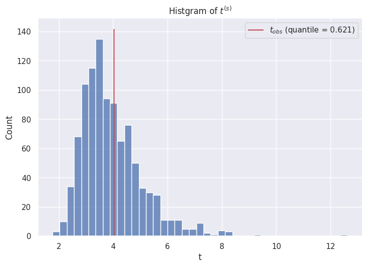
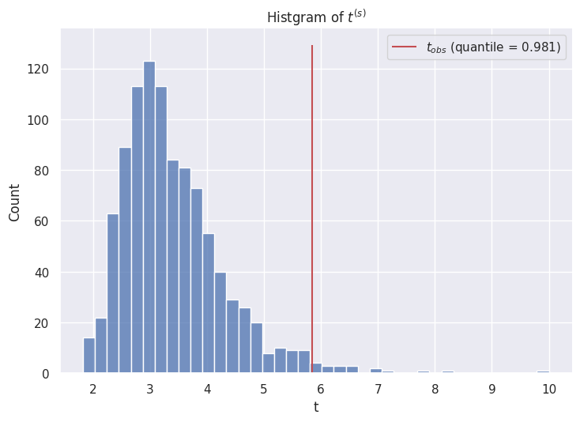

4.3 事後予測チェック#
インポート・設定#
import dataclasses
import warnings
from numbers import Number
import matplotlib.pyplot as plt
import numpy as np
import pandas as pd
import seaborn as sns
from scipy import stats
sns.set_theme()
warnings.simplefilter("ignore")
SEED = 0
観測データ
y_A = np.array([12, 9, 12, 14, 13, 13, 15, 8, 15, 6])
事後予測のためのデータセットを生成する。
@dataclasses.dataclass
class GammaDist:
"""ガンマ分布のパラメータを格納するクラス"""
a: Number
b: Number
@property
def rv(self):
return stats.gamma(a=self.a, scale=1 / self.b)
def sample(self, size) -> np.ndarray:
return self.rv.rvs(size=size, random_state=SEED)
@dataclasses.dataclass
class PoissonDist:
"""ポアソン分布のパラメータを格納するクラス"""
mu: Number
@property
def rv(self):
return stats.poisson(self.mu)
def sample(self, size) -> np.ndarray:
return self.rv.rvs(size=size, random_state=SEED)
def generate_dataset(
posterior_dist,
n_samples,
sample_size,
):
# 事後分布からthetaをサンプリングする
theta = posterior_dist.sample(size=n_samples)
# 事後予測分布からデータyをサンプリングする
dataset = PoissonDist(
theta.reshape(n_samples, 1),
).sample(
size=(n_samples, sample_size),
)
return type("DataSet", (), dict(theta=theta, dataset=dataset))
# 事後分布
posterior_A = GammaDist(a=237, b=20)
posterior_A
GammaDist(a=237, b=20)
# データセットを生成する
dataset_A = generate_dataset(posterior_A, n_samples=1000, sample_size=10)
# サンプルサイズ10のサンプルが1000個できた
print("thetaのサイズ:", dataset_A.theta.shape)
print("datasetのサイズ:", dataset_A.dataset.shape)
thetaのサイズ: (1000,)
datasetのサイズ: (1000, 10)
# thetaを5個見てみる
dataset_A.theta[:5]
array([13.24276562, 12.14381022, 13.32877017, 11.09741795, 11.75411496])
# 1個目のサンプルを見てみる
print("theta:\t", dataset_A.theta[0])
print("sample:\t", dataset_A.dataset[0])
theta: 13.24276561619596
sample: [14 14 12 12 23 17 6 13 8 13]
a#
\(t^{(s)}\) を計算する
def calculate_t(
dataset: np.ndarray,
y: np.ndarray,
):
return_dict = {}
# 各サンプルに対して、平均/標準偏差を計算してtを算出する
t = dataset.mean(axis=1) / dataset.std(axis=1)
return_dict["t"] = t
# 観測データのt
t_obs = y.mean() / y.std()
return_dict["t_obs"] = t_obs
# シミュレーションデータのtにおける観測データtの分位数
quantile_t_obs = (t <= t_obs).sum() / len(t)
return_dict["quantile_t_obs"] = quantile_t_obs
return type("TStatistics", (), return_dict)
t_statistics_A = calculate_t(dataset=dataset_A.dataset, y=y_A)
# シミュレーションデータを5個みてみる
t_statistics_A.t[:5]
array([3. , 4.37314282, 4.36132852, 3.66243195, 6.5 ])
# 観測データのt
t_statistics_A.t_obs
4.0344827586206895
# 観測値のtのシミュレーションデータに対する分位数
t_statistics_A.quantile_t_obs
0.621
シミュレーションデータのヒストグラムの上に観測データを描画する
def plot_t_statistics(
t: np.ndarray,
t_obs: float,
):
quantile_t_obs = (t <= t_obs).sum() / len(t)
sns.displot(
x=t,
aspect=1.5,
).set(xlabel="t", title=r"Histgram of $t^{(s)}$")
plt.vlines(
t_obs,
*plt.gca().get_ylim(),
colors="r",
label="$t_{obs}$" f" (quantile = {quantile_t_obs})",
)
plt.legend()
plot_t_statistics(
t=t_statistics_A.t,
t_obs=t_statistics_A.t_obs,
)

以上より、観測値から計算した \(t\) はシミュレーションデータの最頻値付近にあり、シミュレーションデータの62.1%点にあることがわかった。 よって、ポアソンモデルはこの統計量 \(t\) の分布をよく表現できていると考えられるため、ポアソンモデルは妥当だといえる。
b#
群Bに対しても同様の検証を行う
y_B = np.array([11, 11, 10, 9, 9, 8, 7, 10, 6, 8, 8, 9, 7])
# 事後分布
posterior_B = GammaDist(a=125, b=14)
posterior_B
GammaDist(a=125, b=14)
# データセットを生成する
dataset_B = generate_dataset(posterior_B, n_samples=1000, sample_size=10)
# サンプルサイズ10のサンプルが1000個できた
print("thetaのサイズ:", dataset_B.theta.shape)
print("datasetのサイズ:", dataset_B.dataset.shape)
thetaのサイズ: (1000,)
datasetのサイズ: (1000, 10)
# thetaを5個見てみる
dataset_B.theta[:5]
array([10.38704 , 9.22772706, 10.47878133, 8.14787194, 8.82269516])
# 1個目のサンプルを見てみる
print("theta:\t", dataset_B.theta[0])
print("sample:\t", dataset_B.dataset[0])
theta: 10.387039995152556
sample: [11 11 10 10 19 13 4 10 6 11]
t_statistics_B = calculate_t(dataset=dataset_B.dataset, y=y_B)
# シミュレーションデータを5個みてみる
t_statistics_B.t[:5]
array([2.78151795, 3.38461538, 4.1576092 , 3.52821143, 2.88659718])
# 観測データのt
t_statistics_B.t_obs
5.843090896943715
# 観測値のtのシミュレーションデータに対する分位数
t_statistics_B.quantile_t_obs
0.981
plot_t_statistics(
t=t_statistics_B.t,
t_obs=t_statistics_B.t_obs,
)

以上より、群Bについては観測値から計算した \(t\) はシミュレーションデータの98.1%点にあることがわかった。 よって、ポアソンモデルはこの統計量 \(t\) の分布をうまく表しているとは考えられず、 \(t\) についての推測を行うためには別のモデルを使用するべきだろう。